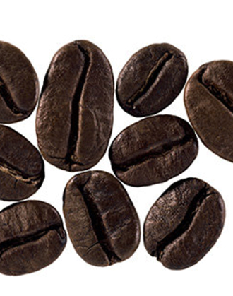

본문콘텐츠영역
BRAND
- 커피는 단순한 음료가 아니라, 사람과 사람을 이어주는 다리입니다 일리는 언제나 그 마음을 담아, 정직한 원두와 정성으로 커피를 만들며, 지속 가능한 농법과 공정 무역을 통해 더 나은 내일을 준비하며, 매 순간 당신의 하루에 따뜻한 쉼표가 되어줍니다 한 잔의 커피로 행복을 전하는 것, 그것이 바로 일리의 가치입니다.
-

- “ illy is dedicated to crafting a single, perfect blend that unites quality, sustainability, and the art of coffee ”
ILLY
CAFFÈ
-
illycaffè, in numbers ‘ 138 ’ 일리카페 운영
국가 수
- 일리카페 운영 국가 수
- 1933년 이탈리아 트리에스테(Trieste)에서 설립한 일리카페는 오늘날 커피 원두 및 가정용 커피 머신을 통해 맛과 품질을 인정받고 있으며 현재 운영되고 있는 국가의 수는 138개에 도달하고 있습니다

B Corp® 인증을 획득한 최초의 이탈리아 커피 회사가 되었습니다
NEWS
커피를 향한 열정이 담긴 이야기와
고객님께 꼭 필요한 소식들을 함께 전해드립니다
[일리카페 코리아] 일리의 완벽함을 맛보다 :
르메르디앙 서울 명동
[일리카페 코리아] 일리의 럭셔리 헤리티지를 경험하다 :
롯데호텔앤리조트 김해
[일리카페 코리아] 일리의 본연의 맛을 만나다 :
네스트호텔
SHOP
세계인이 사랑하는 일리커피,
이제는 온라인에서 편리하게 주문해 집에서 즐기세요

GALLERY
일리커피를 상징하는 다양한
컨셉의 작품들을 만나보세요
- 